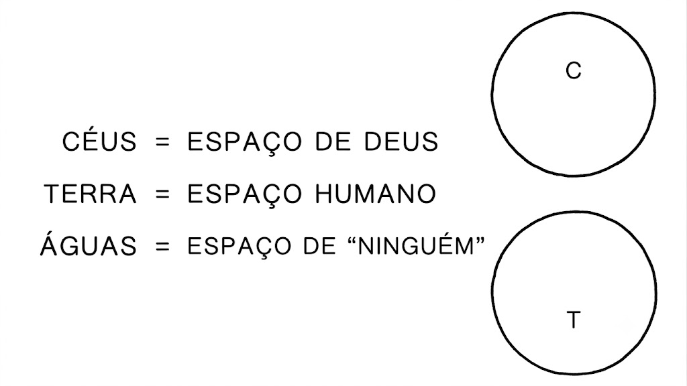
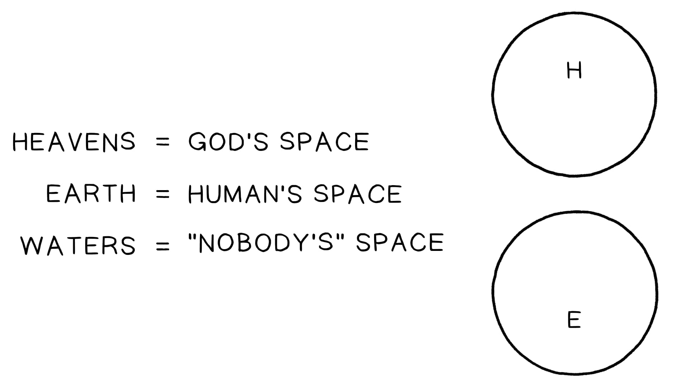
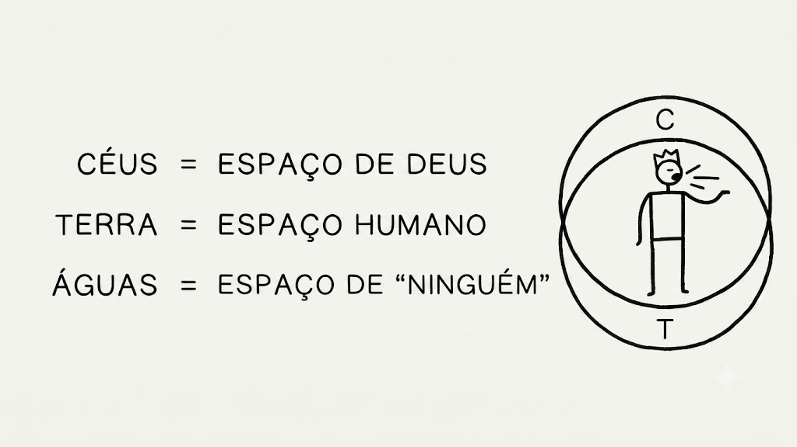
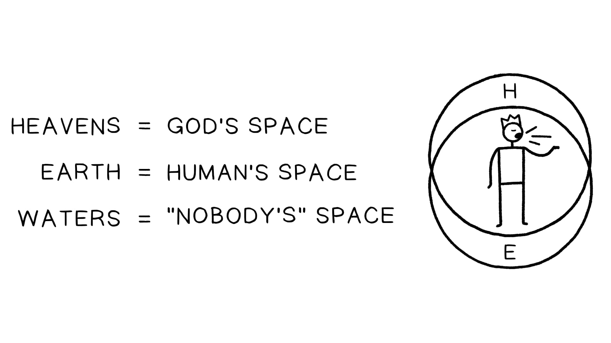
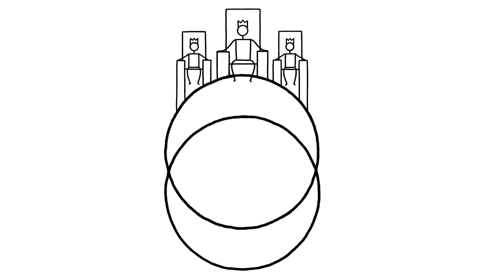

Sessão 3: Céus e Terra se Unem em JesusSession 3: Heaven and Earth Come Together in Jesus
Principais LiçõesKey Takeaways
A visão do Novo Testamento sobre o universo é realmente semelhante à da Bíblia Hebraica.The New Testament’s view of the universe is really similar to that of the Hebrew Bible.
A mensagem de Jesus era que ele estava unindo Céu, a esfera do reinado de Deus, e Terra, o espaço da humanidade, dentro de si mesmo.Jesus’ message was that he was joining Heaven, the sphere of God’s reign, and Earth, the space of humanity, within himself.
Os humanos devem ser parceiros de Jesus em trazer o Céu à Terra, contribuindo para o florescimento humano.Humans are to partner with Jesus in bringing Heaven to Earth by contributing to human flourishing.
Visões do Novo Testamento sobre o Céu e a TerraNew Testament Views of Heaven and Earth
O Evangelho de MateusThe Gospel of Matthew
Os seguintes são exemplos de cosmologia bíblica no Evangelho de Mateus.The following are examples of biblical cosmology in the Gospel of Matthew.
Mateus 4:8: “um alto monte” do qual Jesus pode ver todos os reinos da TerraMatthew 4:8: “a high mountain” from which Jesus can see all the kingdoms of the Earth
Mateus 4:17: o Reino do Céu se aproximouMatthew 4:17: Kingdom of Heaven has come near
Mateus 6:9-10: a oração do Senhor, o Reino/vontade de Deus aqui na Terra como no CéuMatthew 6:9-10: The Lord’s prayer, God’s Kingdom/will here on Earth as in Heaven
Mateus 11:23: Cafarnaum não exaltada até o Céu, mas descendo ao Sheol/HadesMatthew 11:23: Capernaum not exalted up to Heaven but going down to Sheol/Hades
Mateus 12:39-40: sinal de Jonas, ventre da baleia // “coração da Terra”Matthew 12:39-40: Sign of Jonah, belly of whale // “heart of the Earth”
Mateus 12:42: a Rainha do Sul vem “dos confins da Terra”Matthew 12:42: Queen of the South comes “from the ends of the Earth”
Mateus 28:16-20: Em um monte, o Jesus ressurreto diz: “Toda autoridade no Céu e na Terra pertence a mim”Matthew 28:16-20: On a mountain, the risen Jesus says, “All authority in Heaven and on Earth belongs to me”


A Sobreposição do Céu e da Terra. Ilustração criada por Tim Mackie para BibleProject Classroom: Heaven and Earth (2019).The Overlapping of Heaven and Earth. Illustration created by Tim Mackie for BibleProject Classroom: Heaven and Earth (2019).
Jesus É a Sobreposição entre o Céu e a TerraJesus Is the Overlap Between Heaven and Earth


Jesus É a Sobreposição entre o Céu e a Terra. Ilustração criada por Tim Mackie para BibleProject Classroom: Heaven and Earth (2019).Jesus Is the Overlap Between Heaven and Earth. Illustration created by Tim Mackie for BibleProject Classroom: Heaven and Earth (2019).
As Cartas de PauloThe Letters of Paul
Os seguintes são exemplos de cosmologia bíblica nas cartas de Paulo.The following are examples of biblical cosmology in the letters of Paul.
Filipenses 2:9-10: o Jesus exaltado foi elevado para que todo joelho se dobre “no Céu, na Terra e debaixo da Terra.”Philippians 2:9-10: The exalted Jesus was raised high so every knee will bow “in Heaven, on Earth, and under the Earth.”
Efésios 1:19-22: a ressurreição de Jesus o exaltou para “sentar-se à sua direita nos lugares celestiais.”Ephesians 1:19-22: Jesus’ resurrection exalted him to “sit at his right hand in the heavenly places.”
Efésios 2:1-7: fomos ressuscitados dos mortos e “levantados e assentados com ele nos lugares celestiais.”Ephesians 2:1-7: We have been raised from the dead and “raised up and seated with him in the heavenly places.”
2 Coríntios 12:1-4: Paulo fala sobre “um cara que eu conheço” (ele mesmo) que teve uma visão e apocalipse onde ele ascendeu até o “terceiro Céu.”2 Corinthians 12:1-4: Paul talks about “a guy I know” (himself) who had a vision and apocalypse where he ascended up to the “third Heaven.”
O Livro do ApocalipseThe Book of Revelation
Os seguintes são exemplos de cosmologia bíblica no livro do Apocalipse.The following are examples of biblical cosmology in the book of Revelation.
Apocalipse 21:1-3: um novo Céu e Terra, uma cidade descendo do Céu (presumivelmente a nova vindo para uma nova Terra), mas é chamada de tabernáculoRevelation 21:1-3: A new Heaven and Earth, a city descending from Heaven (presumably the new one coming to a new Earth), but it’s called a tabernacle
Apocalipse 21:10: a cidade descendo novamente, descrita como templo-Jerusalém-jardim-trono de DeusRevelation 21:10: The city coming down again, described as a temple-Jerusalem-garden-throne of God
O que está acontecendo nessas passagens? Com o tempo, ficou claro que os autores da Bíblia Hebraica, Jesus e os apóstolos imaginaram um universo muito diferente da nossa concepção moderna do universo.What is going on in these passages? Over time, it became clear that the authors of the Hebrew Bible, Jesus, and the apostles imagined a universe that is very different from our modern conception of the universe.
É crucial entender a Bíblia em seus próprios termos, o que pode exigir desaprender e reaprender a concepção bíblica do cosmos, isto é, o Céu e a Terra.It is crucial to understand the Bible on its own terms, which may require unlearning and relearning the biblical conception of the cosmos, that is, Heaven and Earth.

A Sobreposição Final do Céu e da Terra. Ilustração criada por Tim Mackie para BibleProject Classroom: Heaven and Earth (2019).The Final Overlapping of Heaven and Earth. Illustration created by Tim Mackie for BibleProject Classroom: Heaven and Earth (2019).
Pergunta para ReflexãoReflection Question
A visão do Novo Testamento sobre o universo é realmente semelhante à da Bíblia Hebraica. Por que isso importa quando se trata de entender Jesus e sua mensagem?The New Testament’s view of the universe is really similar to that of the Hebrew Bible. Why does this matter when it comes to understanding Jesus and his message?